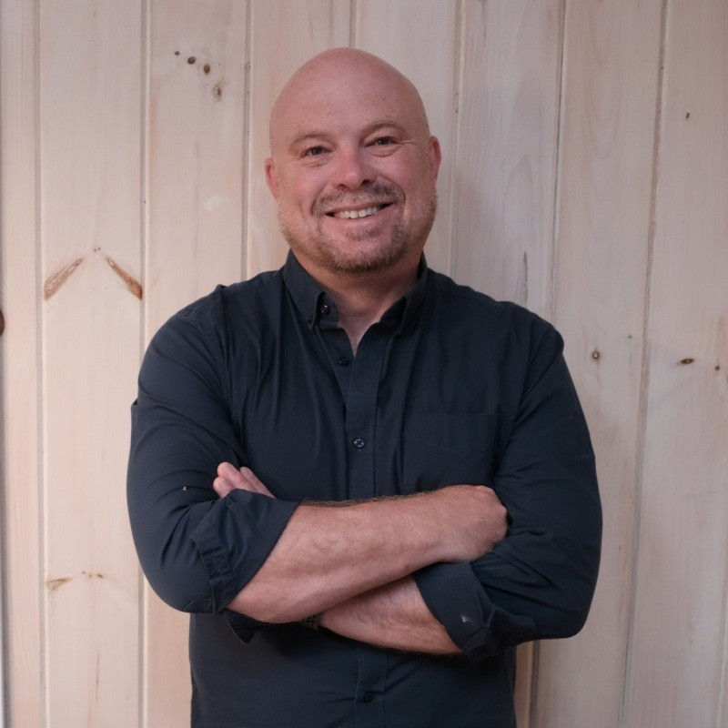
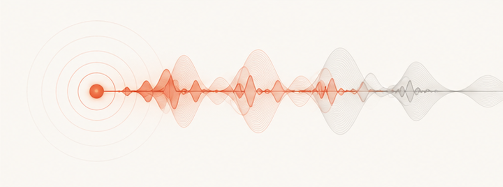
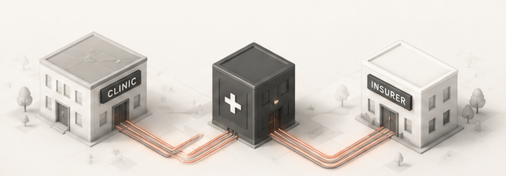
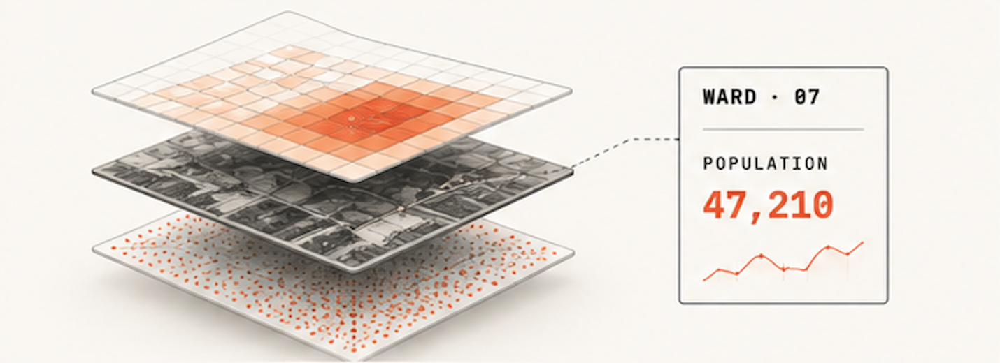
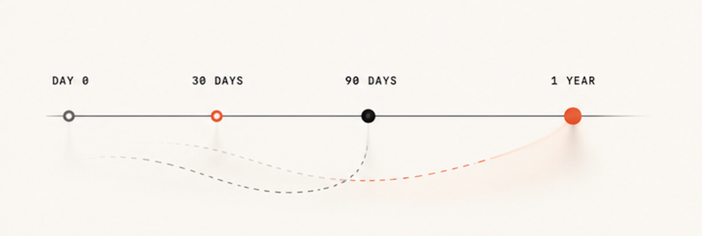

Recode Labs is a principal + practice. A single named partner sets the direction; the work is carried by a rotating bench of engineers, designers, and data scientists who have shipped systems in the places we build for.

Matt leads Recode Labs. Two decades building software for global development — from open-source platforms to production health systems deployed across Africa and South East Asia. Time 100. Founder. CEO. Now focused on building systems that would have been unimaginable without AI.
Every project draws from a network of experts we have worked with across the last decade.
Full-stack and infra engineers who ship production systems in low-bandwidth, high-stakes environments. Comfortable with Kubernetes and SIM cards alike.
Product and systems designers who run field research, prototype in code, and draw the picture a minister or a clinician can hold in their head.
ML and applied-stats researchers who design evaluations that match how the system is actually used.
We don't sell frameworks. Each capability is a standing practice — engagements typically draw on two or three.

Speech, transcription, and low-attention UI for places where typing isn't possible — exam rooms, field visits, class rooms.

FHIR, HL7, and the connective tissue between clinics, ministries, and insurers. We build the the pipesthat will power agentic health systems.

From satellite imagery and census layers to a query a planner can run — "under-5s in Turkana by ward." Segmentation, population estimation, boundary tooling; exportable maps used in immunization campaigns.

Short, high-signal engagements for funders, ministries, and executive teams. Where can you apply AI for real transformation. What "AI-native" should actually mean inside your organization.